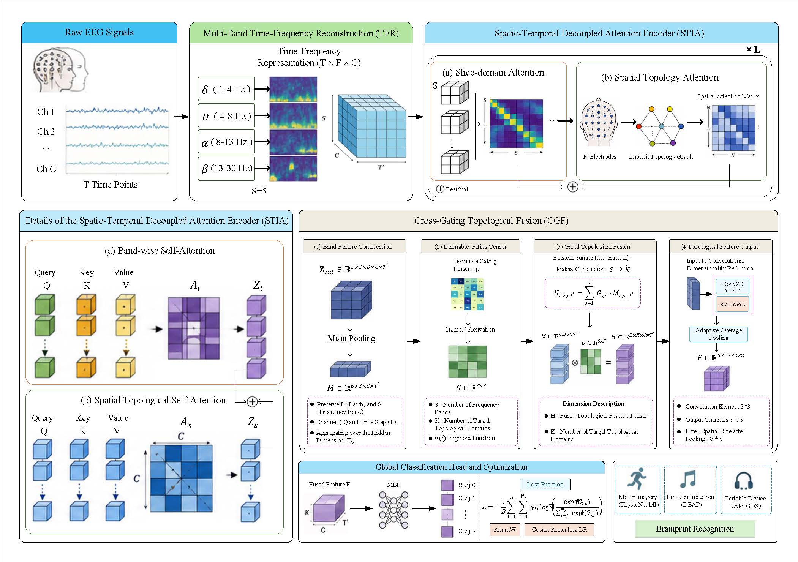
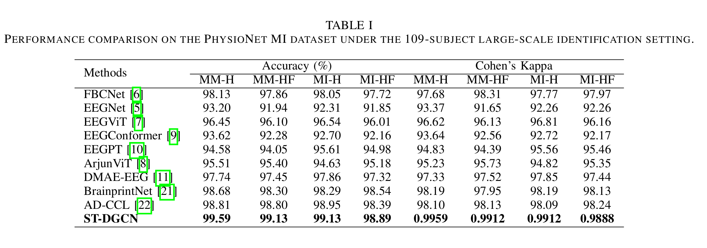
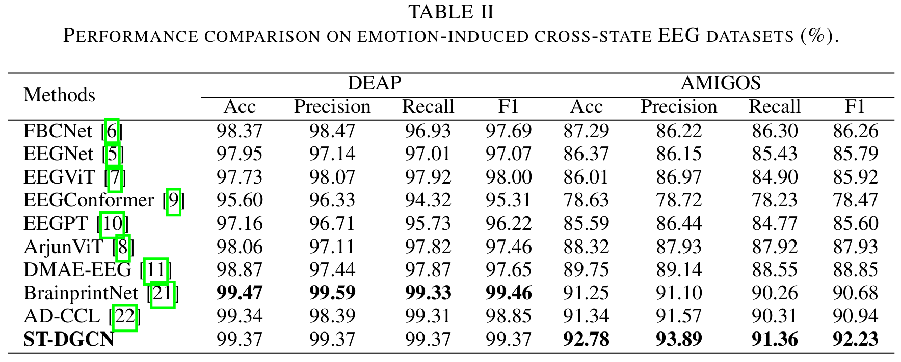
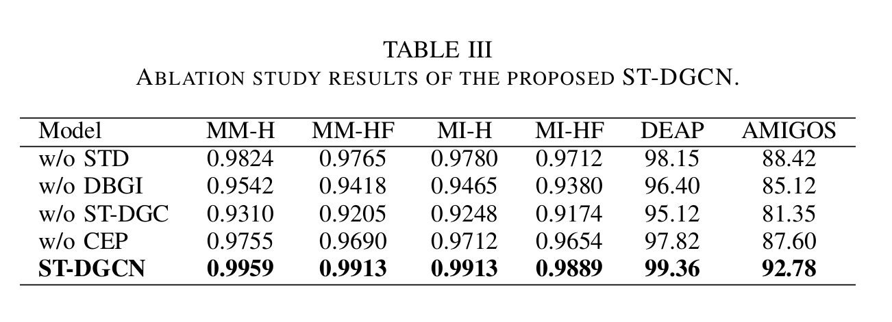

STIA-CGNet: Spatio-Temporal Interactive Attention with Cross-Gated Topology Network
Abstract
Electroencephalography (EEG)-based brainprint recognition has attracted considerable attention due to its liveness, resistance to forgery, and high security. However, the complex coupling between identity-related information and cognitive activities makes it highly susceptible to cross-task interference, leading to degraded identity representations and limited model generalization performance. To address this issue, this paper proposes an electrophysiologically interpretable Spatio-Temporal Interaction Attention and Cross-Gating Network (STIA-CGNet). First, a multi-band feature reconstruction module is employed to project raw EEG signals into multiple physiological frequency bands, enabling complementary spectral representations. Next, a spatio-temporal decoupled attention encoder is designed to separately model temporal dynamics and inter-regional spatial topological relationships, facilitating fine-grained identity feature extraction. Finally, a cross-gating fusion mechanism is introduced to adaptively aggregate multi-band information via a learnable band interaction matrix, enhancing discriminative identity representation while suppressing irrelevant interference features. Extensive experiments on multiple public datasets demonstrate the superior recognition performance and generalization ability of the proposed method. In particular, the model achieves a recognition accuracy of 99.83% on the PhysioNet dataset involving 109 subjects, and also exhibits strong robustness on the DEAP and AMIGOS datasets, validating its effectiveness and potential for large-scale brainprint recognition.
Methodology



Experimental Results
The following tables present the quantitative performance of our proposed DCLT framework compared to state-of-the-art baselines across multiple datasets and varying channel budget configurations.
Table I: Brainprint Recognition Performance on the PhysioNet MI Dataset (64 vs. 16 Channels)

Table II: Random vs. DCLT-Selected 16-Channel Subsets on the PhysioNet MI Dataset

Table III: Performance on DEAP (32 vs. 8 Channels) and AMIGOS (14 vs. 7 Channels) Datasets

Table IV: Comparison of Channel Selection Methods Under Different Channel Budgets

Table V: Ablation Study on Core Components of the Proposed DCLT Framework

Table VI: Inference Performance Comparison for Edge Deployment on a Real-World Dataset